N 皇后问题 – 构造法原理与证明: 时间复杂度O(1)
- [原] E.J.Hoffman; J.C.Loessi; R.C.Moore
- The Johns Hopkins University Applied Physics Laboratory
- [译] EXP 2017-12-29
[!NOTE|style:flat|label:注意]
由于原文使用了“**m皇后**”进行描述，所以本文从现在开始也使用“**m皇后**”进行描述。
我这里就**不调整**为大多数人习惯的“**n皇后**”了，避免某些数学公式参数混淆。
[success] 【写在前面】
这是现在网上流传的一套关于M皇后问题的构造法公式，但是这套公式是怎么得来的，却鲜有人知。而文本会详细阐述这套公式的推导过程：
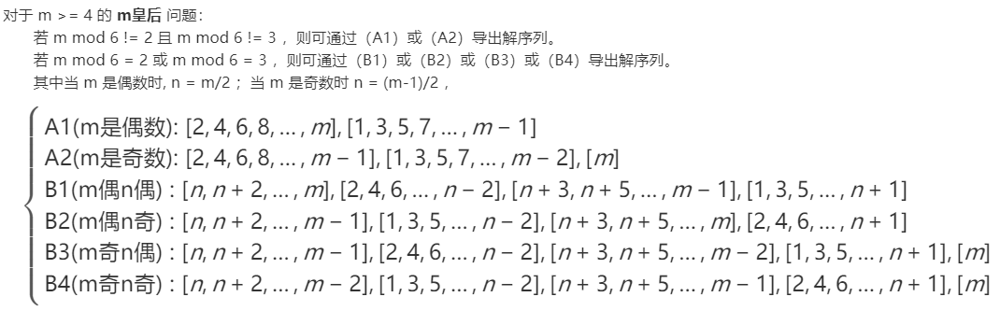
1. 前言
文本核心内容主要译自 E.J.Hoffman、 J.C.Loessi 和 R.C.Moore 发表于 Mathematics Magazine 《数学杂志》 上的学术论文 《Constructions for the Solution of the m Queens Problem》 。
该论文已被美国数学协会 Mathematical Association of America 公开，具体期数为 Vol.42, No.2 (Mar., 1969), pp. 66-72。
该文献可从以下途径购买：
- http://www.jstor.org/stable/2689192
- http://links.jstor.org/sici?sici=0025-570X%28196903%2942%3A2%3C66%3ACFTSOT%3E2.0.CO%3B2-9
该文献的英文原文链接：
2. 问题背景
M皇后问题： 在M×M格的国际象棋上摆放M个皇后，使其不能互相攻击，即任意两个皇后都不能处于同一行、同一列或同一斜线上。
根据场景，又有三种衍生问题：
- ① 共有多少种摆法（即有多少种可行解）
- ② 求出所有可行解
- ③ 求任意一个可行解
问题① 属于 禁位排列 问题，目前是存在通项公式直接求解的。
问题② 属于 搜索 问题，在网上也有多种解法，主流是 回溯法（另有衍生的位运算变种算法），但不管如何优化，回溯法都有一个致命的问题：M值不能过大（一般M=30已是极限）。
问题③ 属于 问题② 的子集，因此很多人的切入点依然是回溯法，也有启发式算法的解法：如遗传算法、还有刘汝佳在《算法艺术与信息学竞赛》提出的启发式修补算法。启发式算法在M<10000左右都是可解的，但是因为启发式算法均存在随机性，收敛速度视不同的收敛因子而变化（我看过某篇论文称启发式算法在M=10000时的耗时等价于回溯法M=30的耗时）。
但早在1969年， 问题③ 的解就被 E.J.Hoffman、 J.C.Loessi 和 R.C.Moore 找到了潜在的数学规律，通过推导出数学公式，利用 构造法 使得该问题可在 O(1) 的时间复杂度得到解。
3. 译者的话
① 原文写得有点艰涩，有些中间步骤是跳过了。我就加上自己的理解做了意译，并补上了跳过的步骤和图示，但是核心的推导思路和步骤不会修改。
② 原文首先给出了3个构造式（其实就是m皇后问题的通解式），然后以此为结论展开了一系列的推导证明这3个构造式是正确的。但是这3个构造式真正是怎么得来，原作者并没有说，估计是原作者做了大量的演绎、从m皇后的特解找到了潜在规则所总结出来的通解。
4. 译文：m皇后问题的构造解法
4.1. 数学模型定义
m皇后问题最初是由Gauss（高斯）提出的，该问题描述如下：
是否有可能在一个m×m的国际棋盘上放置m个皇后使得她们无法互相攻击？（注：皇后是国际象棋中的一种棋子，她可以对横、竖、斜三个方向的棋子发起攻击）
这是一个有趣的问题，我们可以将其约束到一个 数学模型 进行描述：
把棋盘定义为一个m×m的方格矩阵，那么对于任意方格可以使用有序对 (i, j) 以表示其行列坐标，其中 1 ≤ i ≤ m 表示该方格的行编号， 1 ≤ j ≤ m 表示该方格的列编号。
同时我们再为每个方格定义一组对角编号：
令自左上到右下方向为主对角线，对于主对角线上的方格 (i, j) ，显然有：
m - j + i = MAJOR_CONSTANT —— 译者注：这个公式对后续推导起到重要作用
其中 MAJOR_CONSTANT 称之为主对角常数，显然有 1 ≤ MAJOR_CONSTANT ≤ m ，将其定义为方格 (i, j) 的主对角编号。
进一步地，令自右上到左下方向为次对角线，对于次对角线上的方格 (i, j) ，显然有：
i + j - 1 = MINOR_CONSTANT —— 译者注：这个公式对后续推导起到重要作用
其中 MINOR_CONSTANT 称之为次对角常数，显然有 1 ≤ MINOR_CONSTANT ≤ m ，将其定义为方格 (i, j) 的次对角编号。
至此，m皇后问题的解模型可以定义为如下：
放置m个皇后到一个m×m的方格矩阵，使得皇后们的所在的方格同时满足下面所有条件：
- ① 行编号唯一
- ② 列编号唯一
- ③ 主对角编号唯一
- ④ 次对角编号唯一
这个模型足以解决所有m皇后问题（但仅适用于 m ≥ 4 的情况，因为 m = 2、3 时无解，m = 1 的解就不需要讨论了） —— 译者注：这个大前提条件会在最后进行论证
4.2. m皇后通解：三个构造式
由于通解公式相对复杂，为了便于说明，此处不从过程推导出结论，而是反其道而行之：先给出结论的通解公式（且不考虑公式是怎么推演出来的），再证明之。
[info] m皇后问题的解的共由3个构造式组成。
4.2.1. 【构造式A】
令 m = 2n，其中 n = 2, 3, 4, ...构造式A仅适用于m是偶数的情况，它由两个子公式组成：
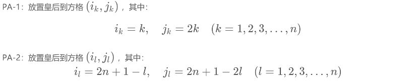
4.2.2. 【构造式B】
令 m = 2n，其中 n = 2, 3, 4, ...构造式B同样仅适用于m是偶数的情况，它同样由两个子公式组成：
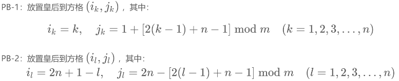
4.2.3. 【构造式C】
构造式C是构造式A或B的扩展推导式，仅适用于m+1是奇数的情况：
当已使用构造式A或B求得一个m×m的皇后问题的解时，若同时增加第 m+1 行和第 m+1 列，那么第 m+1 个皇后应放置在坐标为 (m+1, m+1) 的方格。
4.3. 三个构造式的正确性证明
要证明构造式是成立的，只需要证明每个构造式导出的皇后位置均满足：
- ① 行编号唯一
- ② 列编号唯一
- ③ 主对角编号唯一
- ④ 次对角编号唯一
4.3.1. 【构造式A】的证明
4.3.1.1. 【构造式A】
令 m = 2n，其中 n = 2, 3, 4, ...（即m≥4且是偶数）：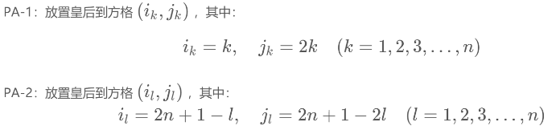
构造式含义：若把棋盘在横中轴线切开，很明显解集是呈中心旋转对称的，其中上半部分对应PA-1的解集，下半部分对应PA-2的解集：
4.3.1.2. 【定理A】
[!TIP|style:flat|label:定理A]
对于m皇后问题，当
n != 3λ + 1（其中λ = 0, 1, 2, ...）时，则必定可以使用【构造式A】求解。
4.3.1.3. 【定理A】的证明
① 行列编号的唯一性证明：- 根据 PA-1 导出的皇后位置为
(k, 2k)，其中1 ≤ k ≤ n - 根据 PA-2 导出的皇后位置为
(2n+1-l, 2n+1-2l)，其中1 ≤ l ≤ n - 明显地，PA-1 的每个皇后放置在前n行的每个奇数列，PA-2 的每个皇后放置在后n行的每个偶数列，亦即每行每列均有且只有一个皇后，行列编号的唯一性得证。
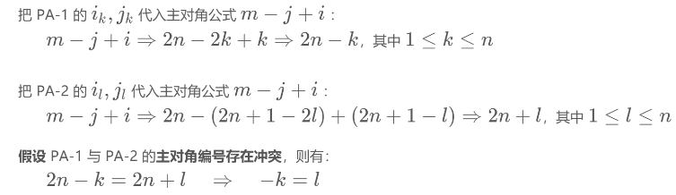
受 k、l 的取值范围影响，显然是不可能的，主对角编号的唯一性得证。
③ 次对角编号的唯一性证明：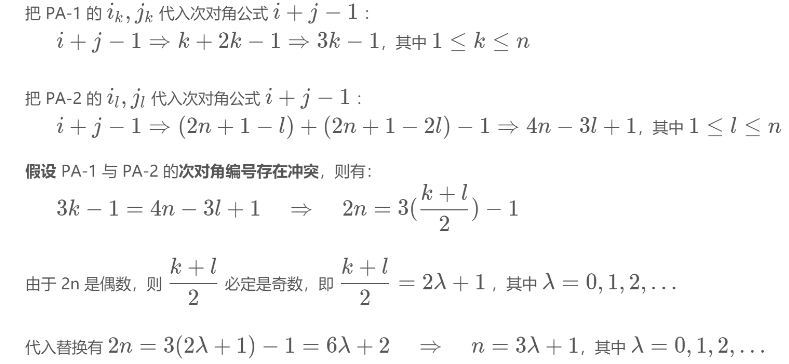
由此可知当 n != 3λ + 1（λ = 0, 1, 2, ...）时，次对角编号是唯一的。
综上①②③，定理A得证 。
4.3.2. 【构造式B】的证明
4.3.2.1. 【构造式B】
令 m = 2n，其中 n = 2, 3, 4, ...（即 m ≥ 4 且是偶数）：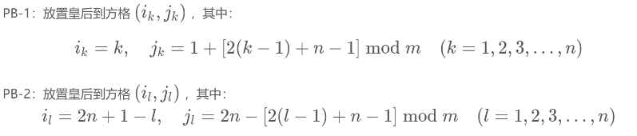
为了便于说明，对 PB-1 和 PB-2 的对m取mod运算做一下等价处理：
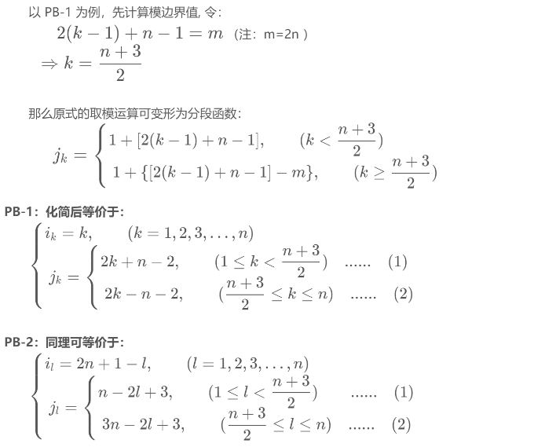
构造式含义：若把棋盘在横中轴线切开，很明显解集是呈中心旋转对称的，其中上半部分对应 PB-1 的解集，下半部分对应 PB-2 的解集。同时根据列编号 mod m 部分的取值（ ≥m 或 <m ），PB-1 与 PB-2 的解集又分别拆分成两个分段函数子集：
4.3.2.2. 【定理B】
[!TIP|style:flat|label:定理B]
对于m皇后问题，当
n != 3λ（其中λ = 1, 2, 3, ...）时，则必定可以使用【构造式B】求解。
4.3.2.3. 【定理B】的证明
① 行列编号的唯一性证明：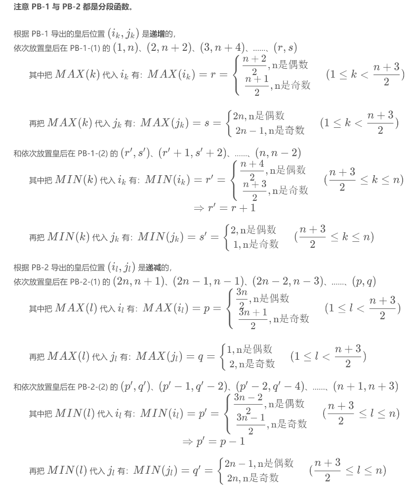
明显地：
- 当n是偶数时，PB-1 的每个皇后放置在前n行的每个偶数列，PA-2 的每个皇后放置在后n行的每个奇数列；
- 当n是奇数时，PB-1 的每个皇后放置在前n行的每个奇数列，PA-2 的每个皇后放置在后n行的每个偶数列。
- 亦即不论n的奇偶性如何，每行每列均有且只有一个皇后，行列编号的唯一性得证。
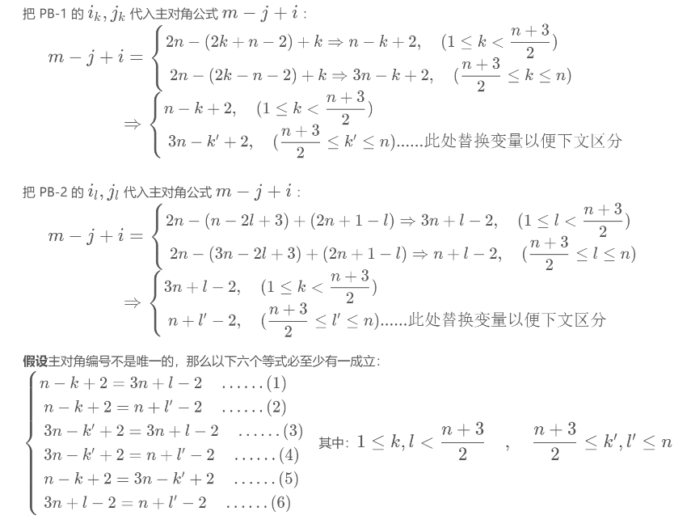
- 化简（1）得
k+l = 4n-2，但因为MIN(k+l) = 2，此时n = 1，与前提条件m=2n≥4 ⇒ n≥2矛盾，因此（1）不成立。 - 化简（4）得
k'+l' = 2n+4，与MAX(k'+l') = 2n矛盾，因此（4）不成立。 - 化简（5）得
k+k' = 2n从取值范围看显然不成立。 - 化简（6）得
l'-l = 2n从取值范围看显然不成立。 - 化简（2）得
k+l' = 4，化简（3）得k'+l = 4， - 由于
k与l的取值范围相同，k'与l'的取值范围相同，因此有：
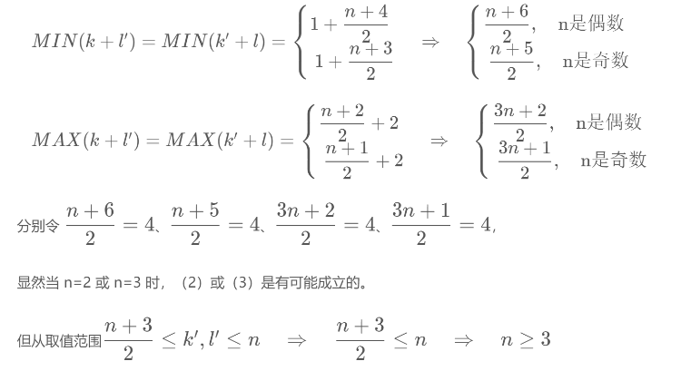
而 n = 3 不在定理B的前提条件 n != 3λ（λ = 1, 2, 3, ...）范围内，可以直接排除。
因此 n > 3（否则 k' 与 l' 不能存在），所以不存在 n = 2 或 n = 3 取值的可能性，亦即（2）（3）实际均不成立。
综上，（1）（2）（3）（4）（5）（6）均不成立，主对角编号的唯一性得证。
③ 次对角编号的唯一性证明：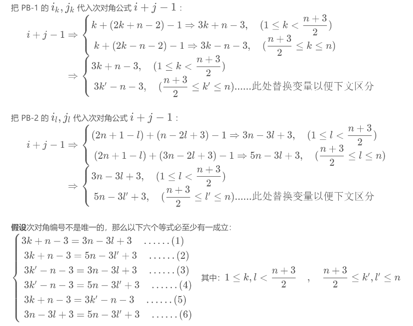
- 化简（1）得
2n = 3(k+l-2)，因此k+l-2必为偶数，令2λ = k+l-2（λ = 1, 2, 3, ...），则有2n=3(2λ) ⇒ n=3λ，即当且仅当n = 3λ时（1）成立。 - 化简（2）得
4n = 3(k+l'-2)，因此k+l'-2必为二重偶数（即至少能被2整除两次），令4λ = k+l'-2（λ = 1, 2, 3, ...），则有4n=3(4λ) ⇒ n=3λ，即当且仅当n = 3λ时（2）成立。 - 化简（3）得
4n = 3(k'+l-2)，因此k'+l-2必为二重偶数（即至少能被2整除两次），令4λ = k'+l-2（λ = 1, 2, 3, ...），则有4n=3(4λ) ⇒ n=3λ，即当且仅当n = 3λ时（3）成立。 - 化简（4）得
2n = k'+l'-2，但从k'与l'的取值范围可知MAX(k'+l'-2) = n+n-2 = 2n-2，亦即2n > k'+l'-2，因此（4）不成立。 - 化简（5）得
2n = 3(k'-k)，因此k'-k必为偶数，令2λ = k'-k（λ = 1, 2, 3, ...），则有2n=3(2λ) ⇒ n=3λ，即当且仅当n = 3λ时（5）成立。 - 化简（6）得
2n = 3(l'-l)，因此l'-l必为偶数，令2λ = l'-l（λ = 1, 2, 3, ...），则有2n=3(2λ) ⇒ n=3λ，即当且仅当n = 3λ时（6）成立。
由此可知，当 n != 3λ（λ = 1, 2, 3, ...）时，（1）（2）（3）（4）（5）（6）均不成立，次对角编号的唯一性得证。
综上①②③，定理B得证 。
4.3.3. 【构造式C】的证明
4.3.3.1. 两条【引理】
我们定义棋盘上由方格 (1, 1)、 (2, 2)、 (3, 3)、 ...、 (m, m) 连线所得的对角线为标准对角线，亦即标准对角线的行列编号必有 i == j 。
在证明构造式C之前，首先需要证明两条引理：
- 【引理A】 使用构造式A得到的解，没有任何皇后的坐标是在标准对角线上的。
- 【引理B】 使用构造式B得到的解，没有任何皇后的坐标是在标准对角线上的。
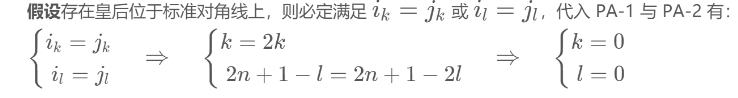
k = 0 与取值范围 k = 1, 2, 3, ..., n 矛盾，l = 0 与取值范围 l = 1, 2, 3, ..., n 矛盾，因此假设不成立，【引理A】得证。
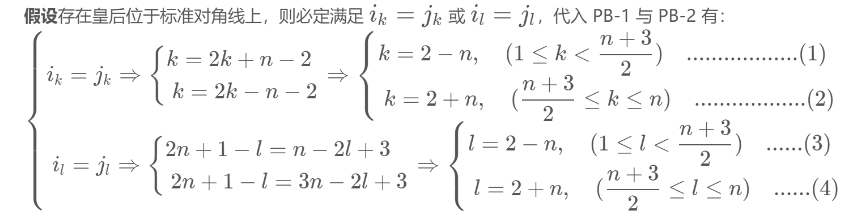
由于 2n=m≥4 ⇒ n≥2，因此（1）（3）不成立，否则 k,l ≤ 0，与取值范围矛盾。
又由于（2）（4）的取值范围 k,l ≤ n，（2）（4）明显不成立。
因此假设不成立，【引理B】得证。
4.3.3.2. 【定理C】
[!TIP|style:flat|label:定理C]
对于可使用【构造式A】或【构造式B】求解的m皇后问题，若同时增加第 m+1 行和第 m+1 列，使其延展为 m+1 皇后问题，那么这个 m+1 皇后问题也是可解的，且第 m+1 个皇后应放置在坐标为
(m+1, m+1)的方格。
4.3.3.3. 【定理C】的证明
① 行列编号的唯一性证明：由于【定理C】是从【定理A】或【定理B】上扩展的，且【定理A】与【定理B】的所有皇后的行列编号唯一性已得到证明，而【定理C】的第 m+1 行与第 m+1 列是新增的，那么第 m+1 个皇后的行列编号也必定是唯一的，因此所有皇后的行列编号必定也是唯一的。
② 主对角编号的唯一性证明：由于第 m+1 个皇后的主对角线与标准对角线是重合的，而通过【引理A】与【引理B】可知在m×m范围内的标准对角线上不存在任何皇后，换言之标准对角线上只有第 m+1 个皇后，所以主对角线编号是唯一的。
③ 次对角编号的唯一性证明： 对于第 m+1 条次对角线，上面只有 (m+1, m+1) 一个方格，显然次对角线编号是唯一的。
4.4. 大前提条件m≥4的证明
上述所有的证明，都是基于一开始给出的大前提条件：
- 对于构造式A或B：令 m = 2n，其中 n = 2, 3, 4, ...（即 m≥4 且 m是偶数）
- 对于构造式C：在构造式A或B可解的基础上令 m+1（即 m≥5 且 m是奇数）
亦即m皇后问题（ m≥4 且 m是偶数）可通过【构造式A】或【构造式B】求解，而 m+1 皇后问题（ m+1≥5 且 m是奇数）则可通过【构造式C】求解。
至于为什么 m=1、 m=2 或 m=3 时并不适用于构造式A、B、C就是这里要讨论的。
首先当 m=1 时，虽然是有明确的唯一解，但并不存在 m=2n 的形式。而n作为三个构造式的重要变量，既然一开始就不存在n值，构造式A、B、C也就无从谈起了。
那么需要证明的，就是为什么 m=2 与 m=3 也不可取？
证明：
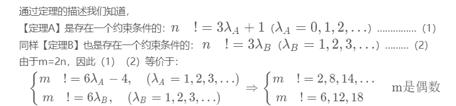
不难发现，（2）中 m=2 是在 m<4 范围内没有被约束条件限制的特例。
但当 m=2 时 n=1，不妨把 n=1 代入 PB-1 与 PB-2，取值范围均矛盾，无法计算列坐标编号。
因此对于【定理A】与【定理B】而言，m=2 都是不可解的，从而导致 m=3 也不可用【定理C】求解。
证毕（事实上，通过画图可以明显发现 m=2、 m=3 是无解的）。
5. 译者后记：通解转换式（编程用）
在原作者提出的三个构造式A、B、C中，均使用 (i, j) 的二维坐标形式标记每个皇后的位置，从数学角度上更易于表达作者的思想，但是不便于编程使用。
为此译者在这里补充针对构造式A、B、C的转换公式，使用一维坐标形式标记每个皇后位置，以配合编程使用（其实这就是目前网上普遍流传的m皇后问题构造式）。
一维坐标的标记方式为：从第1行开始，依次写出m个数字，分别代表每行的皇后列坐标。亦即行坐标为数序（索引/下标），列坐标为数值。
如序列 [5, 3, 1, 6, 8, 2, 4, 7] 等价于 (1,5), (2,3), (3,1), (4,6), (5,8), (6,2), (7,4), (8,7)
5.1. 【构造式A】的转换式
约束条件：n != 3λ + 1（其中λ = 0, 1, 2, ...）
- 即：
m != 2(3λ+1) ⇒ (m mod 6) != 2（m为偶数） - 且：
m-1 != 6λ+2 ⇒ (m mod 6) != 3（m为奇数，此时适用于构造式C）
当m为偶数时：
- 把行编号
1~n代入 PA-1，可得到第1~n行的解序列：[2, 4, 6, 8, ..., m] - 把行编号
n+1~2n代入 PA-2，可得到第n+1~m行的解序列：[1, 3, 5, 7, ..., m-1] - 合并两个解序列，就是构造式A的通解转换式（A1）：
[2, 4, 6, 8, ..., m], [1, 3, 5, 7, ..., m-1]………………………………………………………（A1）
当m为奇数时：
- 把行编号
1~m-1代入（A1），可得到第1~m-1行的解序列：[2, 4, 6, 8, ..., m-1], [1, 3, 5, 7, ..., m-2] - 然后直接套用构造式C（增加第m行第m列），则可得到通解转换式（A2）：
[2, 4, 6, 8, ..., m-1], [1, 3, 5, 7, ..., m-2], [m]………………………………………………（A2）
5.2. 【构造式B】的转换式
约束条件：不满足构造式A约束条件的，都可使用构造式B求解。
- 即：
m mod 6 = 2（m为偶数） - 或：
m mod 6 = 3（m为奇数，此时适用于构造式C）
当m为偶数时, n=m/2：
若n为偶数：
- 把行编号
1~n代入 PB-1，可得到第1~n行的解序列（注：PB-1是分段函数）：[n, n+2, ..., m], [2, 4, 6, ..., n-2] - 把行编号
n+1~2n代入 PB-2，可得到第n+1~m行的解序列（注：PB-2是分段函数）：[n+3, n+5, ..., m-1], [1, 3, 5, ..., n+1] - 合并两个解序列，就是构造式B的通解转换式（B1）：
[n,n+2,...,m], [2,4,6,...,n-2], [n+3,n+5,...,m-1], [1,3,5,...,n+1]………………………………………（B1）
若n为奇数：
- 把行编号
1~n代入 PB-1，可得到第1~n行的解序列（注：PB-1是分段函数）：[n, n+2, ..., m-1], [1, 3, 5, ..., n-2] - 把行编号
n+1~2n代入 PB-2，可得到第n+1~m行的解序列（注：PB-2是分段函数）：[n+3, n+5, ..., m], [2, 4, 6, ..., n+1] - 合并两个解序列，就是构造式B的通解转换式（B2）：
[n, n+2, ..., m-1], [1, 3, 5, ..., n-2], [n+3, n+5, ..., m], [2, 4, 6, ..., n+1]………………………（B2）
当m为奇数时, n=(m-1)/2：
若n为偶数：
- 把行编号
1~m-1代入（B1），可得到第1~m-1行的解序列：[n, n+2, ..., m-1], [2, 4, 6, ..., n-2], [n+3, n+5, ..., m-2], [1, 3, 5, ..., n+1] - 然后直接套用构造式C（增加第m行第m列），则可得到通解转换式（B3）：
[n, n+2, ..., m-1], [2, 4, 6, ..., n-2], [n+3, n+5, ..., m-2], [1, 3, 5, ..., n+1], [m]………………（B3）
若n为奇数：
- 把行编号
1~m-1代入（B2），可得到第1~m-1行的解序列：[n, n+2, ..., m-2], [1, 3, 5, ..., n-2], [n+3, n+5, ..., m-1], [2, 4, 6, ..., n+1] - 把行编号1然后直接套用构造式C（增加第m行第m列），则可得到通解转换式（B4）：
[n, n+2, ..., m-2], [1, 3, 5, ..., n-2], [n+3, n+5, ..., m-1], [2, 4, 6, ..., n+1], [m]………………（B4）